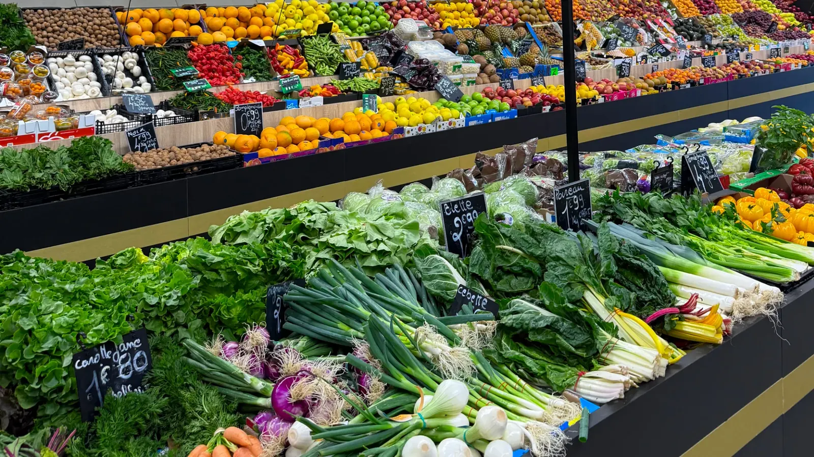

Le réseau Délice
Survolez nos
5 boutiques.
Supermarchés, boucheries et primeur halal, de Manosque à Gap. Faites défiler : la caméra vous emmène de ville en ville. Un clic sur une boutique, et vous entrez.
Le réseau Délice
Supermarchés, boucheries et primeur halal, de Manosque à Gap. Faites défiler : la caméra vous emmène de ville en ville. Un clic sur une boutique, et vous entrez.
Étape 1 sur 3
Étape 2 sur 3
Étape 3 sur 3
La famille Délice
Ouvertes 7 jours sur 7, avec la même promesse partout : des produits frais, halal, à des prix justes.
Cliquez sur une boutique pour y entrer
Préparation de la maquette…
Nos boutiques
Les 5 boutiques en un coup d'œil, avec l'ouverture en temps réel.
 Entrer
Supermarché · Manosque
Délice Market
544 Av. Frédéric Mistral, 04100 Manosque
Ouvert 7j/7 · 8h30 – 21h
Entrer
Supermarché · Manosque
Délice Market
544 Av. Frédéric Mistral, 04100 Manosque
Ouvert 7j/7 · 8h30 – 21h
 Entrer
Boucherie · Manosque
Boucherie Délice
14 bis Av. du Majoral Raoul Arnaud, 04100 Manosque
Ouvert 7j/7 · 8h – 19h
Entrer
Boucherie · Manosque
Boucherie Délice
14 bis Av. du Majoral Raoul Arnaud, 04100 Manosque
Ouvert 7j/7 · 8h – 19h

Entrer Primeur · Manosque Délice Primeur 327 Av. Frédéric Mistral, 04100 Manosque Ouvert 7j/7 · 6h – 21hNos savoir-faire
Qui sommes-nous
Depuis 2021, Délice Market est le supermarché halal de proximité de Manosque : un commerce propre, moderne et familial, pensé pour les courses de tous les jours.
Autour du supermarché, la famille Délice compte aujourd'hui Boucherie Délice et Délice Primeur à Manosque, Délice Boucherie à Digne-les-Bains et, nouveauté 2026, Délice Market à Gap. Partout, la même promesse : la qualité du commerce de proximité, à des prix accessibles.
« Des bouchers très gentils et accueillants, même à l'heure de fermeture. Ils sont très professionnels et vous servent toujours avec le sourire. La viande est de qualité, le magasin est très propre. »
Jakatro
« Magasin très bien, rangé et organisé. Un large choix, une large gamme halal. Personnel très accueillant et sympathique. »
Mehdi Azedine
« Wahoo la propreté, les rayons bien rangés. Une vitrine à ne plus savoir quoi choisir. Une viande excellente à prix abordable et des bouchers souriants. Ça manquait à Digne-les-Bains. »
Yazid


 Boucheries halal
Boucheries halal
 Primeur
Primeur
 Épicerie orientale
Épicerie orientale